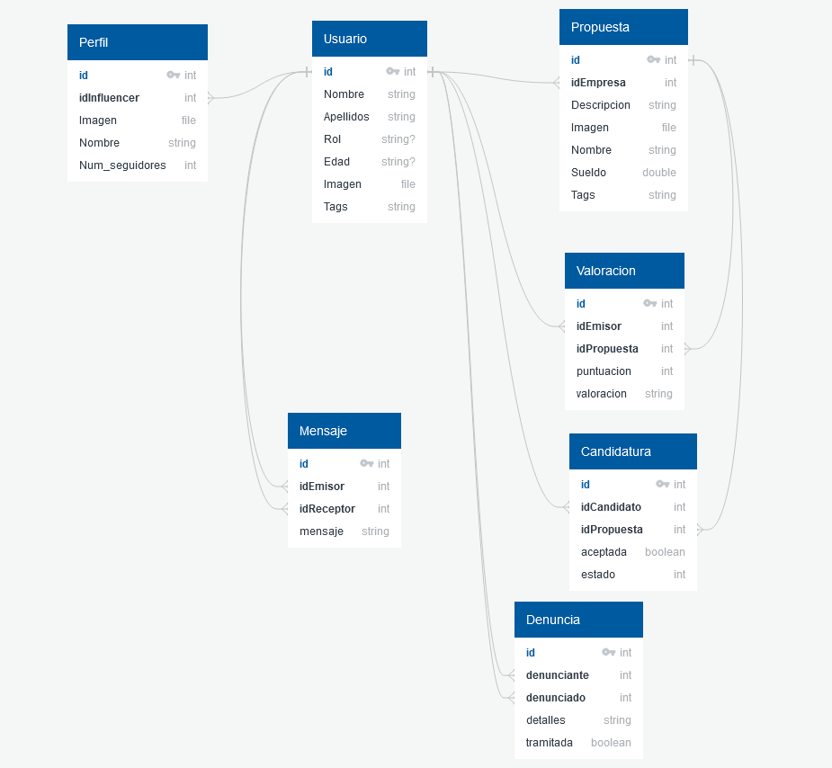

Influencing
Objetivo
La función de Influencing consiste en unir a empresas que busquen patrocinadores para sus
productos dentro de una cuota de mercado que tengan prefijada con influencers que tengan
perfiles en redes sociales relacionados con el público a los que se quiere hacer llegar esos
productos.
Los usuarios de la aplicación serán las empresas y los influencers. Una vez registrados en la
aplicación, las empresas pueden filtrar sus búsquedas de perfiles a través de distintos tags que
referencien a su marca/producto. A su vez, los influencers deben incluir en su perfil sus
canales de comunicación para que se pueda confirmar su capacidad de difusión. También se
permite que las empresas realicen ofertas públicas para que los influencers se ofrezcan como
posibles patrocinadores.
La aplicación tendrá un chat para que las empresas puedan negociar sus patrocinios, así como
un rating de referencias para ambos tipos de usuarios.
También existirá el rol de administrador para moderar el tipo de propuestas y perfiles que se
registran en la aplicación. El administrador recibe una notificación de cada registro y podrá
eliminar las que no considere adecuadas.
Vistas
- inicio - vista inicial. Ofrece un resumen general de la actividad
del perfil.
- chat de negociación - vista de empresa y usuario.
Permite negociar una propuesta de patrocinio y aceptarla/declinarla.
- administración - vista de administrador. Permite administrar empresas, influencers y propuestas.
- búsqueda perfiles - vista de empresa y usuario. Permite
buscar perfiles por distintos criterios y muestra un resumen de la información básica del perfil.
- búsqueda propuestas - vista de empresa y usuario. Permite
buscar propuestas por distintos criterios y muestra un resumen de la información básica de la propuesta.
Subvistas (sin ruta propia)
- perfil - vista de empresa y usuario. Permite ver la información del perfil y editarla en caso
de ser la del usuario logueado.
- notificaciones - vista de empresa y usuario. Permite ver las notificaciones relacionadase con
el perfil logueado, marcarlas como leídas o borrarlas.
- edicion de propuestas - vista de empresa. Permite publicar/editar una propuesta.
- final de campaña - vista de empresa y usuario. Permite subir una valoración al finalizar el
patrocinio de una propuesta.
Modelo del dominio

Recursos
{kind=link}
{kind=link}